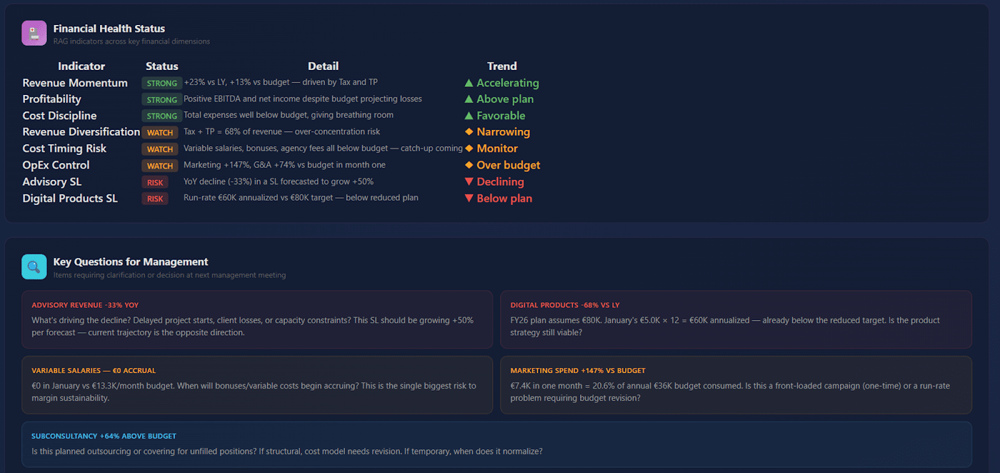
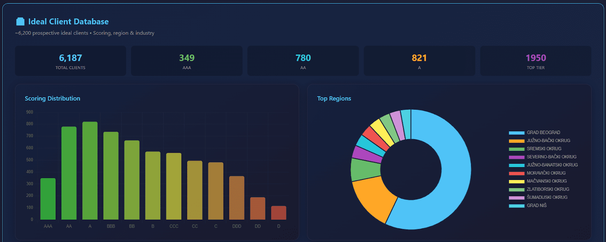
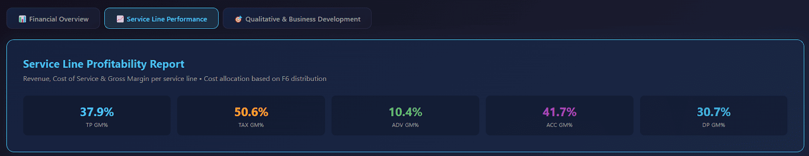
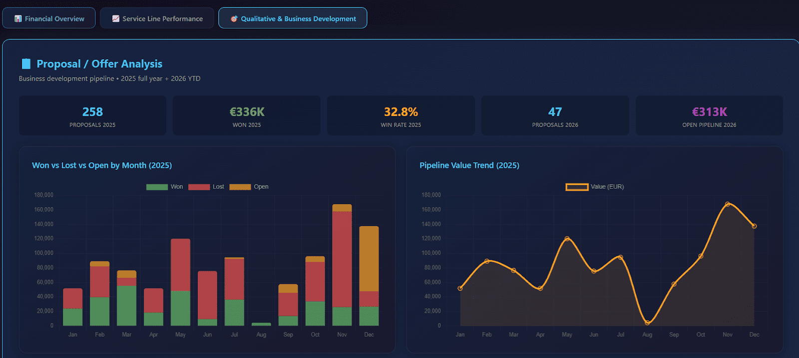
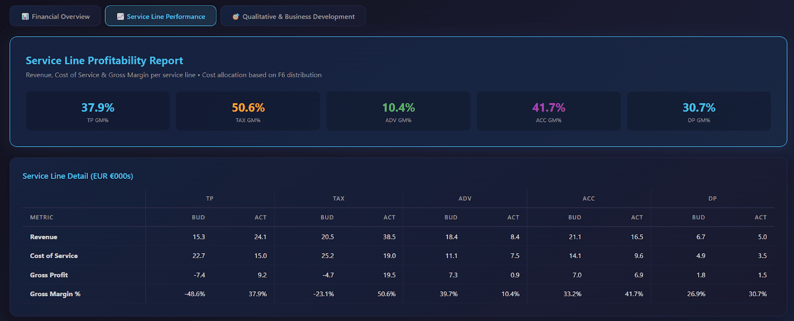
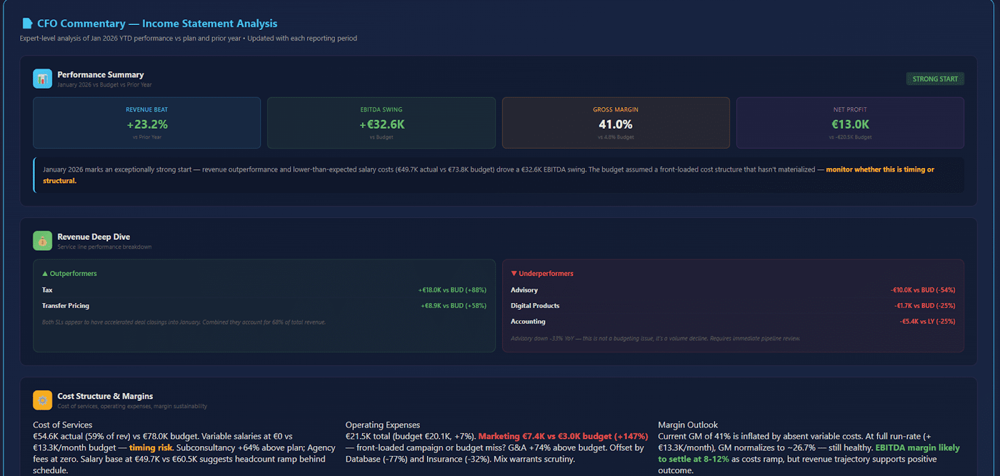
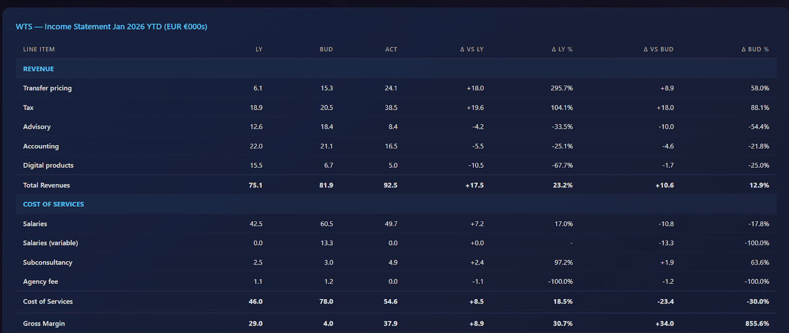
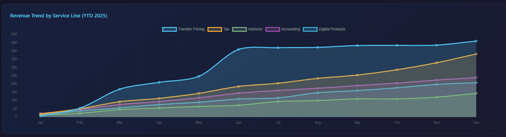
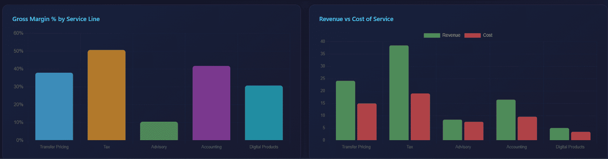
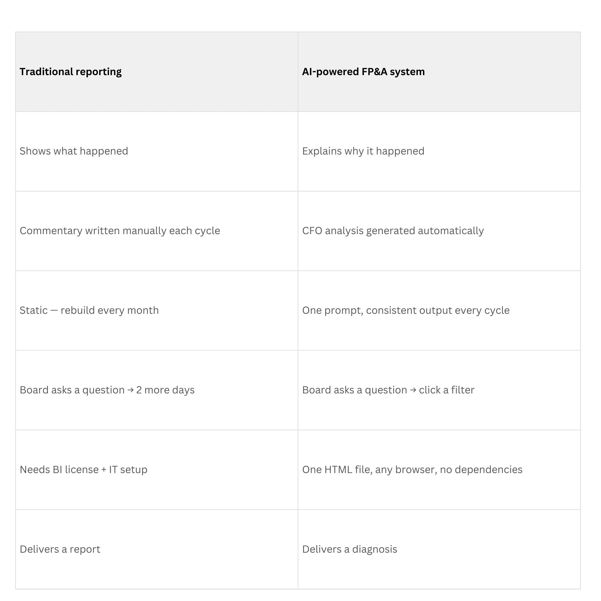

רוב הדאשבורדים הפיננסיים עוצרים בויזואליזציה. הם אומרים לכם שהכנסות ירדו, עלויות עלו, מרווחים השתנו. אבל את העבודה האמיתית של FP&A — הפרשנות, הניתוח, ההמלצות — עדיין אתם עושים לבד. ניסיתי השבוע ניסוי שינה לי את הראייה.
מה ניסיתי
לקחתי מערך נתונים אמיתי של FP&A — שמונה קבצי אקסל נפרדים:
- מאזן בוחן
- תקציב
- הכנסות לפי קו שירות
- נתוני HR ושכר
- צנרת מכירות
- הנחות תחזית
בדיוק המבנה המפוצל שצוות הכספים שלכם עובד איתו כל חודש. מגוון קבצים. מגוון פורמטים. מגוון מערכות. ובכל חודש מישהו בצוות תופר אותם ידנית.
ביקשתי מ-AI לבנות את כל מערכת ה-FP&A Reporting.

מה יצא — הרבה יותר מדאשבורד
מה שיצא לא היה רק דאשבורד. זה היה תצוגה מחוברת של העסק כולו:
- הכנסות, מרווחים ורווחיות לפי קו שירות
- עוצמת הצנרת מול התחזית
- ביצועים בפועל מול תכנון ושנה קודמת
אבל הכלי לא עוצר בהצגת המספרים. הוא גם מנתח אותם — מדגיש סטיות מרכזיות, מסביר תנועות מרווח, ומייצר פרשנות בסגנון CFO עם שאלות והמלצות פעולה.
בכמה קליקים אתם רואים לא רק מה קרה, אלא למה זה קרה ומה העסק צריך לעשות עכשיו.

4 הממדים של המערכת
ממד 1: הסקירה הפיננסית
הבסיס — וכבר כאן המערכת עוברת מה שרוב הצוותים מייצרים ידנית.
- 7 כרטיסי KPI עם דלתות צבעוניות שמתהפכות נכון לעלויות
- דוח רווח והפסד מלא: בפועל מול תקציב מול שנה קודמת
- הכנסות לפי 5 קווי שירות, עלויות לפי קטגוריה, Gross Margin, EBITDA ורווח נקי
- שני מצבי צפייה: YTD ותחזית שנה מלאה
- פרשנות CFO: סיכום ביצועים, צלילה להכנסות, אבחון מרווחים, טבלת RAG, שאלות להנהלה ופעולות מומלצות

אם זה כל מה שהכלי עשה — הוא כבר היה מחליף את הכנת ה-Board Deck החודשית שלכם. אבל זה רק ממד אחד מתוך ארבעה.
ממד 2: רווחיות לפי קו שירות
זה הממד שרוב צוותי הכספים היו רוצים לבנות — אבל אף פעם לא בונים.
P&L ברמת החברה מסתיר שאלה קריטית: אילו חלקים בעסק באמת רווחיים אחרי חלוקת עלויות?
בניסוי שלנו, המרווח ברמת החברה נראה סביר. אבל תצוגת קו השירות גילתה:
- מס: 44% מרווח גולמי
- Transfer Pricing: 31%
- ראיית חשבון: 19%
- ייעוץ ומוצרים דיגיטליים: שליליים

זה משנה את השיחה כולה. החברה לא הייתה "רווחית עם מקום לצמוח". היא הייתה רווחית בשני קווים ומממנת שלושה אחרים. עבור רוב החברות — ניתוח זה הוא פרויקט רבעוני שלוקח שבועות. כאן זה טאב שלוחצים עליו.
ממדים 3 ו-4: צנרת מכירות ותמחור — התצוגה קדימה
כאן הכלי הולך לאן שאף דוח פיננסי מסורתי לא הולך. השאלות האסטרטגיות הגדולות:
- האם הצנרת חזקה מספיק לתמוך בתחזית?
- האם אנחנו מנצחים בקווי השירות הנכונים?
- האם אנחנו מתמחרים נכון — או משאירים כסף על השולחן?

ניתוח צנרת: 1,100 רשומות הצעות מחיר — זכיות/הפסדים/פתוחות לפי חודש וקו שירות. שיעור זכייה: מס 42%, ייעוץ 28%. הפער הזה מספר סיפור.
בסיס לקוחות אידיאלי: 6,200 לקוחות פוטנציאליים מדורגים AAA עד D — מראה בדיוק היכן לרכז מאמצי פיתוח עסקי, מבוסס נתונים ולא אינטואיציה.

החלק שהפתיע אותי
לאחר שהמערכת עלתה, AI דגל בבעיית מרווח שלא הייתה ברורה מהדאשבורד הרגיל. המערכת גם ייצרה פרשנות מלאה בסגנון CFO:
- סיכום ביצועים
- הסבר לסטיות מרכזיות
- ניתוח מרווחים
- מדדי בריאות פיננסית
- שאלות שההנהלה צריכה לשאול
- פעולות מומלצות בסדר עדיפויות

במילים אחרות: הדאשבורד לא רק הציג את המספרים. הוא הסביר אותם. נתן תובנות מרכזיות. נתן עצות.
למה זה חשוב עכשיו
P&L אומר לכם שהחברה עשתה 120,000 ש"ח הכנסות החודש שעבר. שימושי. אבל הוא לא אומר לכם:
- אילו קווי שירות באמת רווחיים אחרי עלויות מוקצות — ואילו נראים עמוסים אבל מפסידים כסף
- האם הצנרת חזקה מספיק לתמוך בתחזית — או שאתם מתכננים צמיחה עם שיעור זכייה של 28%
- כמה הכנסות אתם משאירים על השולחן דרך תמחור נמוך מדי

שלב הפרשנות הוא המקום שבו אנשי הכספים מבלים את רוב הזמן. וזה החלק הכי יקר — לא בכסף, אלא בהזדמנות מקצועית. כי כל חודש שמבלים בהרכבת דוחות הוא חודש שלא בניתם את היכולת האנליטית שהופכת אתכם לחיוניים.
ההבדל בין דוח לאבחון
דוח עונה על: "מה קרה?"
אבחון עונה על: "מה זה אומר, ומה צריך לעשות?"

כשמסתכלים על מחזור הדיווח הטיפוסי:
- איסוף נתונים פיננסיים
- השוואה לתכנון
- חישוב סטיות
- הסבר מה השתנה
- המלצה על פעולות
שלבים 1-3 הם מכניים. המומחיות האמיתית יושבת בשלבים 4 ו-5. כאשר AI מאוטמט את הכנת הנתונים, המיקוד משתנה — ומאות שעות עבודה מכנית הופכות לניתוח ופרשנות.
רוב האנשים כותבים: "צור לי דוח פיננסי עם ניתוח." ואז מופתעים שהפלט גנרי.
הפרומפט שפיתחתי הוא מפרט טכני שמגדיר: כל מקור נתונים, הפריסה המדויקת, לוגיקה עסקית, לוגיקת צבעים, ומסגרת הניתוח. הפעם הראשונה לוקחת מאמץ. אחרי זה — משתמשים בתבנית. כל מחזור, מחליפים את קבצי הנתונים — והכלי בונה מחדש את הכל.

סיכום — מה לוקחים מהמאמר הזה?
- מערכת FP&A עם AI היא לא רק דאשבורד — היא מערכת הפעלה פיננסית שמחברת ביצועים, רווחיות, צנרת ותמחור
- הכוח האמיתי הוא בפרשנות האוטומטית: AI לא רק מציג מספרים, הוא מסביר אותם ומציע פעולות
- הפרומפט הטכני הוא הנכס — מגדירים פעם אחת, משתמשים כל חודש מחדש
- רווחיות לפי קו שירות חושפת מציאות שה-P&L הכולל מסתיר
- הזמן שחוסכים בהרכבה מוכנס לפרשנות — וזה שינוי ה-ROI האמיתי

מוזמנים להצטרף לקהילת AI Finance Transformation בוואטסאפ לקבלת עדכונים, דוגמאות ודיונים לייב על שילוב AI בפיננסים:
הצטרפו לקהילה ←